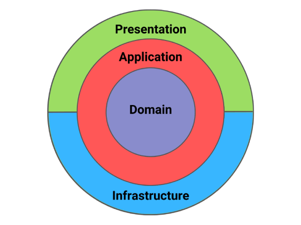
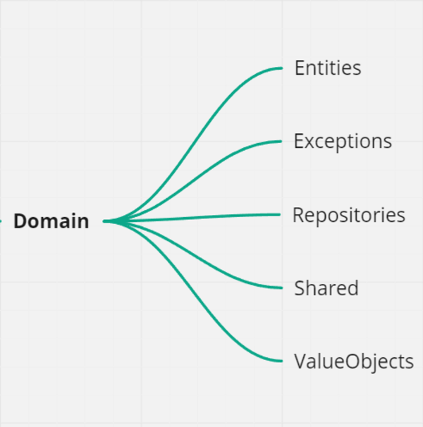
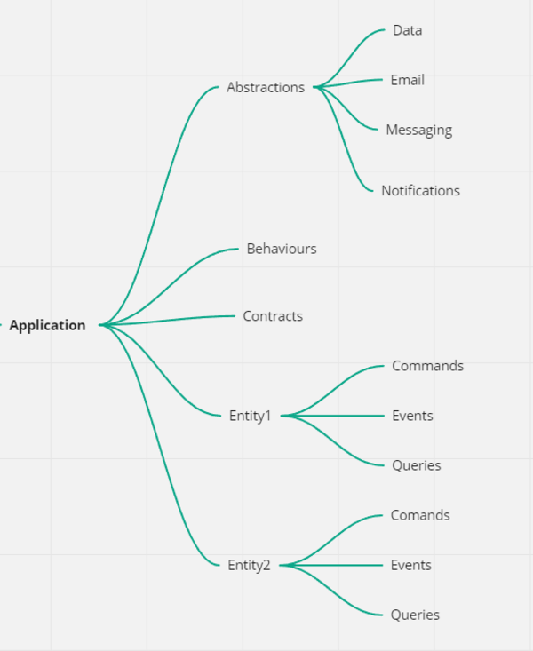
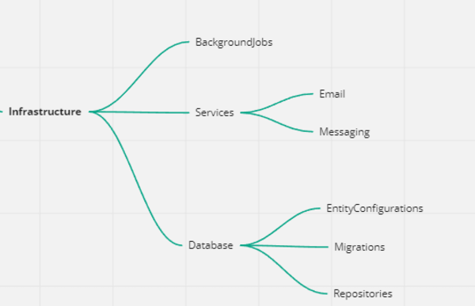
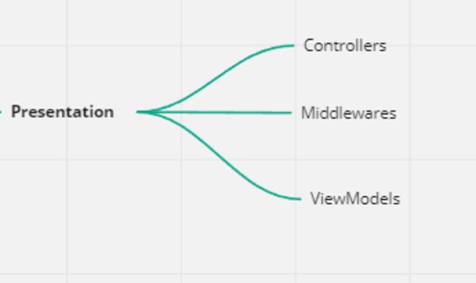

Clean Architecture is a great way to structure your applications. This architecture is divided into four layers:
- Domain
- Application
- Infrastructure
- Presentation
Typically, each layer corresponds to one project within your solution, creating a layered architecture.
Here is a graphical depiction of Clean Architecture:
What are the steps to implement this in our .NET solutions?
Domain Layer
In Clean Architecture, the domain layer houses the core business logic, such as entities and their specifications. This layer occupies a central position within the architecture, surrounded by application entities, which can be either application model classes or database model classes. By utilizing the code-first approach in application development with ASP.NET Core, these entities can generate tables in the database.
Here is the folder structure:
You can introduce more things here if you think it's required. One thing to note is that the Domain layer is not allowed to reference other projects in your solution.
Application Layer
The Application layer is positioned directly above the Domain layer and serves as an orchestrator for it. It holds the most critical use cases in your application.
There are two approaches to organizing your use cases: utilizing services or utilizing commands and queries. Personally, I prefer the command and query approach, and I am a big advocate of the CQRS pattern.
Here is the folder structure:
Within the Abstractions folder, I establish the interfaces that the Application layer requires. The implementation of these interfaces is situated in one of the higher layers.
To correspond with each entity in the Domain layer, I generate a folder that contains definitions for commands, queries, and events.
Infrastructure Layer
The Infrastructure layer consists of implementations for outward-facing services. Which services belong in this category?
- Databases - PostgreSQL, MongoDB, MSSQL
- Identity providers - Auth0, keycloak
- Emails providers
- Storage services - AWS S3, Azure Blob Storage
- Message queues - Rabbit MQ
Here is the folder structure:
I place my DbContext implementation in Database folder if I'm using EF Core.
Presentation Layer
The Presentation layer serves as the system's entry point, and it is typically implemented as a Web API project.
The Controllers, which specify the API endpoints in our system, are the most crucial aspect of the Presentation layer.
Here is the folder structure:
On occasion, I relocate the Presentation layer away from the Web API project itself. This is done to isolate the Controllers and establish more stringent constraints. However, if this process appears too complex, it is not necessary to implement it.
Is there only one way to define folder structure?
No, of course not! Clean Architecture is very flexible, and you can experiment with it and structure it how you like.
Do you like more granularity? Create more specific projects.
Do you dislike a lot of projects? Separate concerns using folders.
It's up to you to decide what's best.